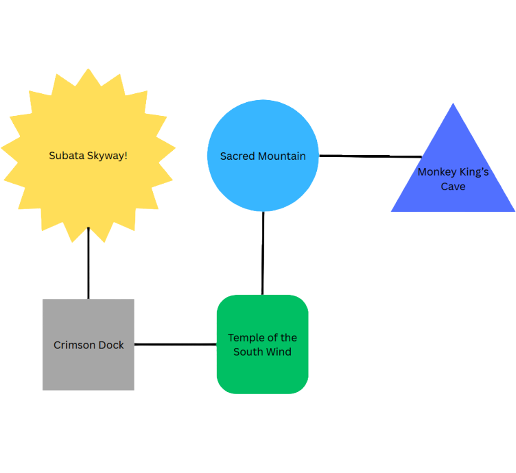
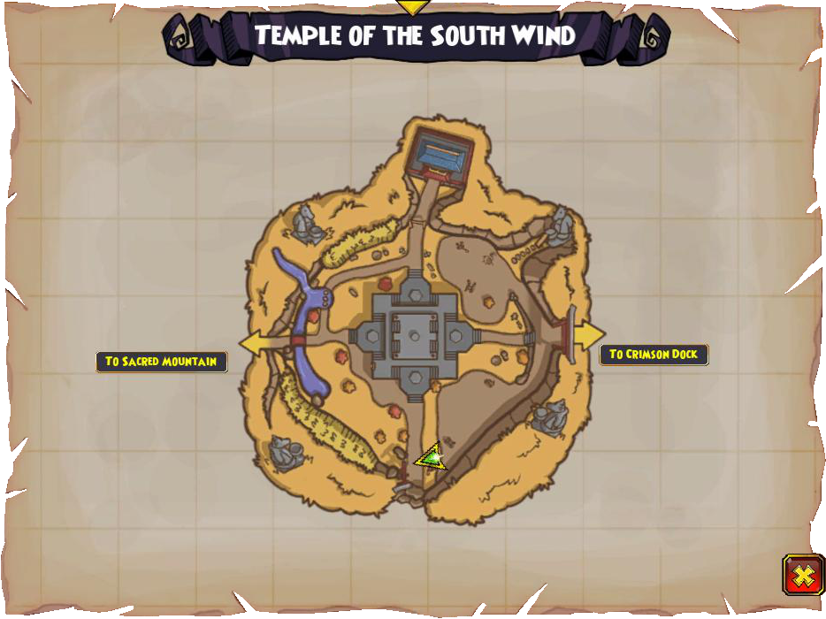
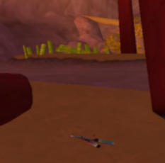
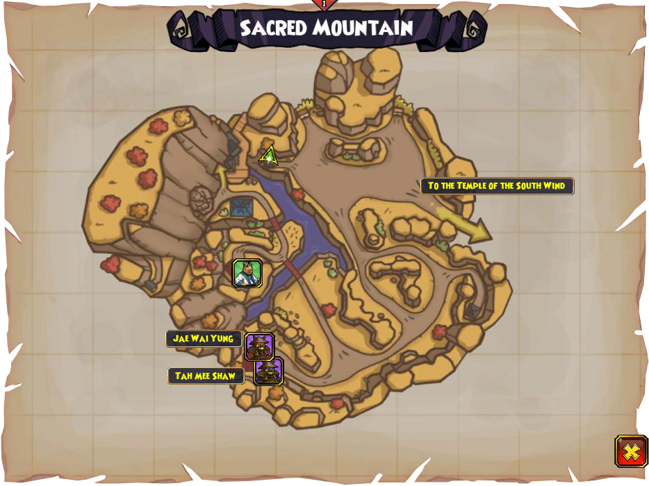
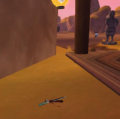

Dock connections
The dock is in Subata Skyway. It connects to the Temple of the South Wind, which leads to the Sacred Mountain, which then leads to Monkey King's Cave.


Zeke Quest Info!
There are two zeke collectibles if you are doing his quest for this dock and the locations it is connected to. One is in the Sacred Mountain and the other is in the Temple of the South Wind.
Temple of the South Wind Knife


It's along the road on the left entering from the crimson dock.
Sacred Mountain Knife


It's near a pavilion along the river.